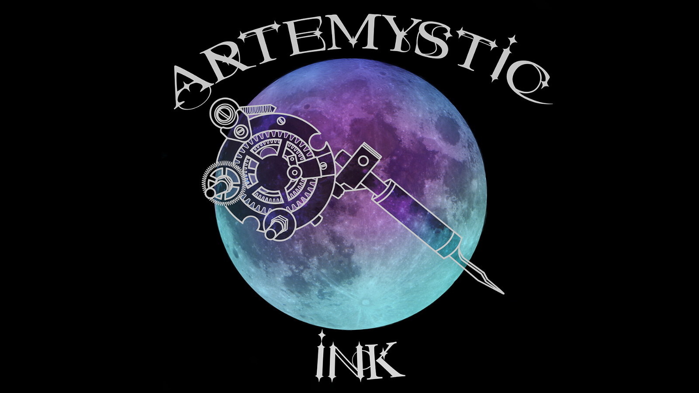
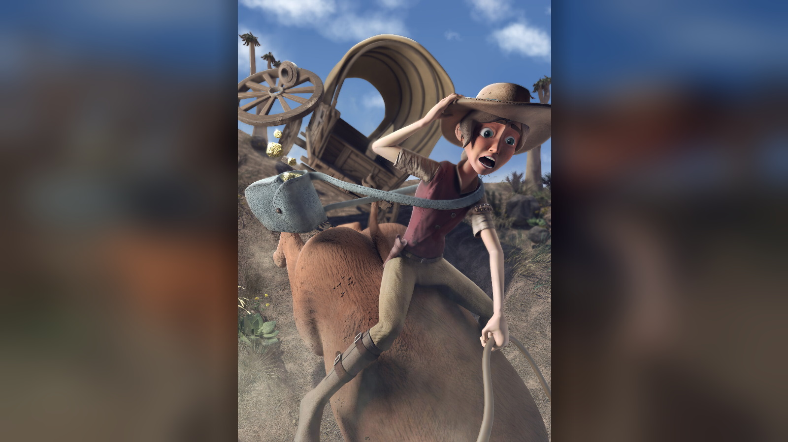
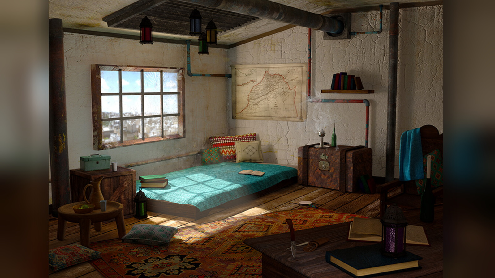

I am currently a student finishing my studies for a diploma in 3D digital Animation at the end of 2019 and I am
very passionate about aiming to continuously develop my skills in the ever growing climate for CG artists. The
areas in which I am most driven to develop my skills are in Character Modeling, Texturing, Look Development and
Compositing, however, I would also be interested in the opportunity to grow in 3D animation. Programs in which I
am most proficient include Autodesk Maya, Substance Painter, Zbrush, Nuke and Photoshop. I also have experience
with programs such as Substance Designer, ToonBoom, After Effects, Animate CC and Premiere Pro.
Portfolio
1 / 8
CG Artist Showreel
A compilation of the work I have completed over the past 3 years of studies, inlcuding my work done on
our 3D animated short film for our final year of studies which will be released next year.
2 / 8
Low Poly Character Turn around
While interning at an app developer in George, South Africa. I was tasked with concepting,
modelling, texturing and rigging a 3D character under 4500 polys for use in games/apps. He is a
radioactive blob in a suit that just wants to be your friend... and possibly give you radiation
poisoning in the process.
3 / 8
Skulduggery Pleasant 3D character
This is a personal project of mine and my first time using Zbrush. I have been a fan of
Derick Landy's 'Skulduggery Pleasant' book series for many years, and have always wanted to see what it
might look like as film. This is my rendition of how Skulduggery might look as a 3D character in a film
4 / 8
'Afternoon Tea' 2nd Year Production
Our final project for 2nd year was to produce a short 3D production with the characters we had created
prior. We were required to create the scenario, the set and animate our character, as well as write and
record the audio at college. In this scene Elizabeth is in an old farm house hiding out with the Boer
soldiers, tasting Rooibos tea for the first time her reaction is anything but ladylike.
5 / 8
2D Production 1st year
In my first year of studies at the Animation School (2017), we were tasked with creating a 2D production,
with our own original character based off an audio clip from a selection given to us. This is my character
Saltred the Salty wizard after his wagon of onions has been attacked. This is my first attempt at 2D
animation.
6 / 8

Freelance Logo Design
In 2017 I was hired by a tattoo artist based in Johannesburg to design a logo for the studio. The
inspiration i was told to draw from was a steampunk aesthetic, the mystic arts and the goddess of the
moon and the hunt, Artemis
7 / 8

2nd Year Still Render
In my 2nd year of study in 2018, we concepted , modeled, textured and rigged a character of our own
creation. This is Elizabeth Harlow, an Englishwoman who immigrated to South Africa shortly prior to the
Boer war. After her and her husbands farm is burnt down, she joins the boer's in fighting the English,
in this still scene she has just stolen gold from an English mine and is frantically trying to escape.
8 / 8

1st Year 3D Environment Renders
In my first year of studies at the animation school we were tasked with concepting, modelling, texturing
and lighting a 3D environment, based on a location and a character who we had written. These are the day
time and night time renders of an environment based in Morocco.